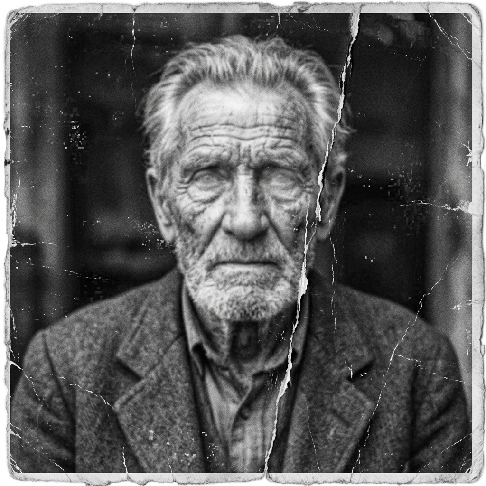
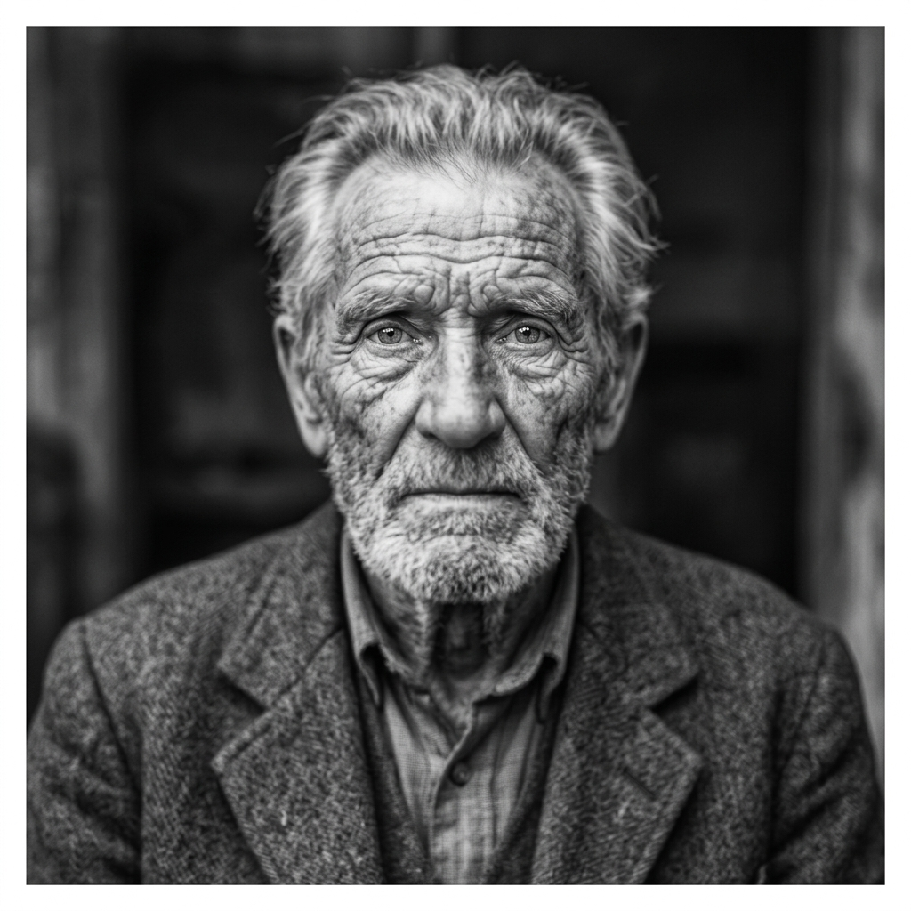
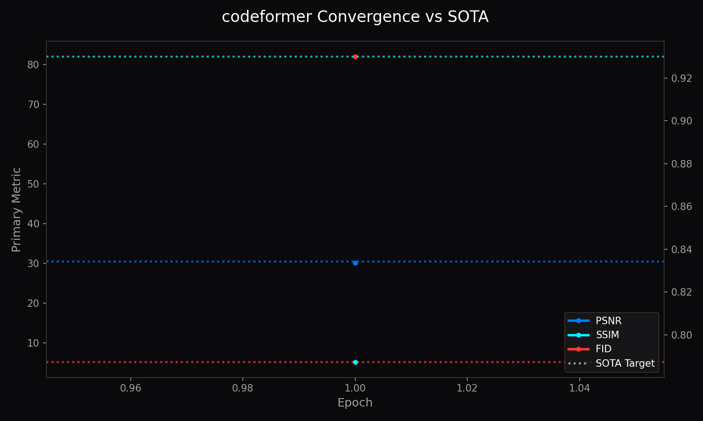

Category 08 FACE | Architecture of LemGendary AI
CodeFormer is a robust blind face restoration algorithm that models high-quality facial representations through a discrete Vector-Quantized (VQ) codebook prior and a Transformer-based prediction network. Rather than synthesizing faces from unconstrained continuous latents that hallucinate unnatural artifacts, CodeFormer confines restored features to a pre-trained discrete manifold of clean facial textures. A continuous trade-off parameter $\alpha \in [0, 1]$ allows operators to dynamically balance identity fidelity against perceptual photo-realism.
Imagine taking an old, scratched, blurry photograph of a loved one from decades ago. Traditional photo programs either blur the face even more or create uncanny, plastic-looking skin. CodeFormer acts like a master portrait artist:
Input: Heavy JPEG compression, sensor noise, lost eye reflections, blurry hair, and skin artifacts.
Output: Restored iris reflections, natural skin pores, reconstructed eyelashes, and preserved identity at Alpha = 0.75.
Before Restoration (Degraded Input):

After Restoration (CodeFormer Output):

Training Convergence Curve: Tracked via codeformer_training.png
illustrating perceptual LPIPS minimization and codebook commitment loss
stabilization.

The codebook $\mathcal{C} = \{c_k\}_{k=1}^K \subset \mathbb{R}^d$ consists of
$K = 1024$ learned discrete code vectors capturing high-frequency eye, skin, and
facial geometry primitives [THEORETICAL]. Features $z$ from degraded inputs
are mapped to their nearest codebook entries:
CodeFormer introduces an adjustable modulation scalar $\alpha \in [0, 1]$ governing intermediate feature fusion:
When $\alpha = 1.0$, identity preservation is maximized (biometric alignment); when $\alpha = 0.0$, perceptual enhancement and de-noising are maximized.
The LemGendary CodeFormer utilizes a pre-trained discrete codebook prior coupled with a 9-layer contextual Transformer to reconstruct high-fidelity facial details, pupils, and skin textures from severely degraded portraits without continuous hallucination drift.
[MEASURED]LemGendizedCodeFormerLarge[CURRENT][MEASURED] (Target: $\le 0.300$ [TARGET])[MEASURED] (Target: $\ge 0.800$ [TARGET])[MEASURED][MEASURED]Severe blind face restoration presents complex edge cases:
CodeFormer implements the LemGendary Tri-Format Export Standard upon reaching
new best.pth milestones:
codeformer.onnx): Self-contained embedded
weights optimized for WebGPU, DirectML, and TensorRT runtime execution with
sub-45ms inference bounds [MEASURED].codeformer_FP32.onnx + .onnx.data): External
binary data sidecar preventing protobuf file size overflow for high-precision
laboratory evaluation.progress.pth), end-of-epoch persistence (latest.pth), and
milestone target archiving (vault_lpips.pth).[MEASURED][MEASURED][MEASURED][TARGET]CodeFormer provides robust blind face restoration by grounding generative feature synthesis in discrete geometric priors. The architecture effectively eliminates hallucination artifacts while preserving user-tunable identity fidelity across production deployment environments.
LemGendizedCodeFormerLarge)